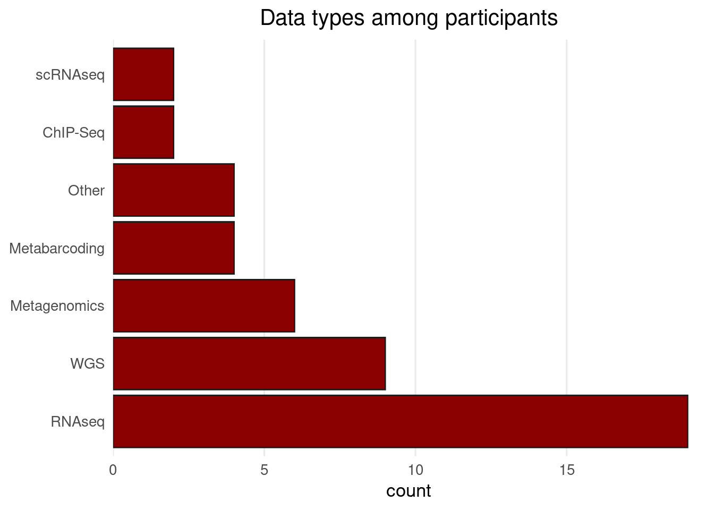
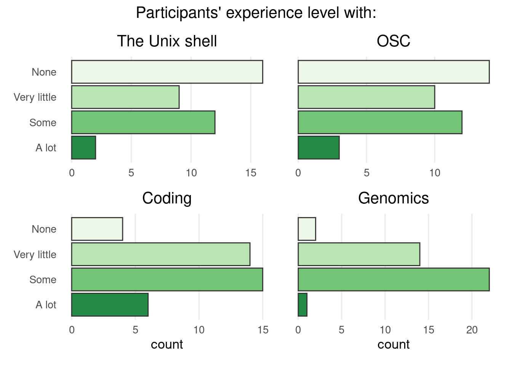

Introduction to the Workshop
What you will learn
The focus of this workshop is building some general (foundational) skills for analyzing genomics data — specifically, for doing so with command-line programs at the Ohio Supercomputer Center (OSC).
Command-line programs are preferred for many of the steps to analyze genomic sequencing data. Because such datasets tend to contain a lot of data, it is also preferable to run your analyses not on a laptop or desktop, but at a supercomputer like OSC.
These realities mean that in the field of genomics, you need the following set of skills that you may not have been taught previously:
- Having a basic understanding of a supercomputer
And being able to:
- Use the Unix shell (work in a terminal)
- Write small shell scripts that run command-line programs
- Submit scripts to a supercomputer’s “queue” — and monitor & manage the resulting batch jobs
- Activate and probably install software in a Linux environment where you don’t have admin rights
We will teach the basics of these skills during this workshop!
It may be useful to point out that we will not teach you much, if anything, about:
- Details of genomic data file types — except, briefly, FASTQ
- Details of specific (genomic) analyses
- Making biological inferences from your data
Practicalities
We have a slightly complicated set up with participants in-person in Wooster with an instructor (Jelmer now via Zoom), in-person in Columbus with an instructor, and directly via Zoom. Some notes:
The workshop consists of a series of 9 modules: see the schedule. We intend to respect the start and end times for every day, but individual modules may take shorter or longer than indicated below.
We have one 10-15 minute break between two modules every day, and another impromptu bathroom break in a longer module.
The instructors will be available for additional questions from about 15 minutes before we start, and for about 30 minutes after we end each day.
This website has all the material that we will go through, with one page for each of module. See the links in the schedule as well as in the top bar menus to access it.
In-person participants don’t need to connect to the Zoom call, since Zoom will be broadcast on the large screen (but you can of course connect if you can better see the instructor’s screen that way).
Because we’re not all on Zoom, we’ll try to avoid the Zoom chat and instead use this Google Doc to share links, inpromptu code that is not on the website, and non-urgent questions.
Whenever you have a question, please feel free to interrupt and speak up, both in-person and on Zoom. Because we will mute the in-person rooms on the Zoom call by default, signal to Mike (Columbus) or Menuka (Wooster) when you have a question, who will then unmute the room.
If your question is not urgent and you don’t want to interrupt the flow, put it in the Google Doc or ask about it during a break.
Sign-up form responses


Personal introductions
Instructors
- Jelmer Poelstra, Molecular and Cellular Imaging Center (MCIC), Wooster
- Mike Sovic, Center for Applied Plant Sciences (CAPS), Wooster
A special mention goes out to Menuka Bhandari who is managing the Selby in-person room. Menuka is also knowledgeable about the workshop material and may be able to help you if you need/prefer someone in the room itself for a certain question.
Participants
Please very briefly introduce yourself — include your position, department, and why you wanted to go to this workshop.